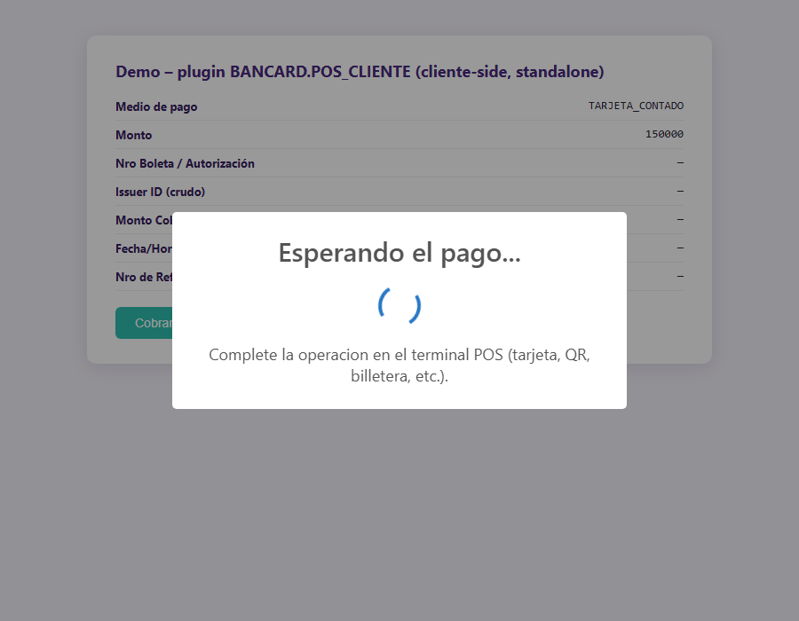
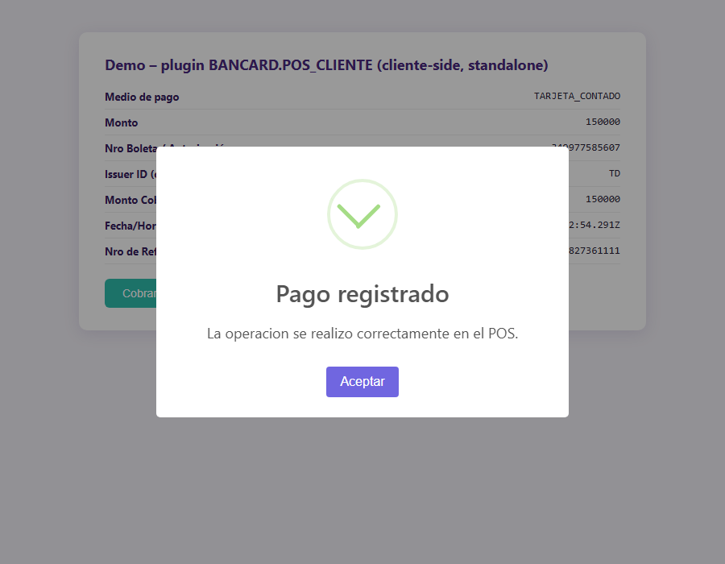
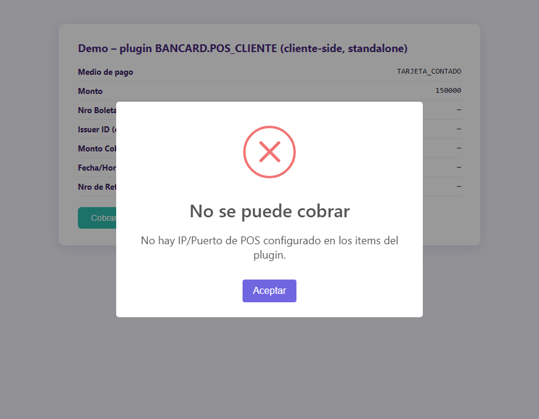

Plugin de Dynamic Action para Oracle APEX: cobra con un terminal físico POS Bancard directo desde el navegador del cajero, sin ningún servidor de aplicaciones en el medio. Genérico, instalable en cualquier app APEX.
Una integración servidor-a-servidor con un terminal POS Bancard funciona solo si el servidor de aplicaciones llega por red a la IP local del terminal. En muchos despliegues reales el servidor y el terminal están en segmentos de red distintos, y ese camino nunca conecta.
Este plugin es la vía alternativa: quien sí está en la misma LAN que el terminal es el navegador del cajero, no el servidor. El plugin hace fetch() directo desde el navegador al IP/puerto local del POS — sin ningún backend en el medio.
POST /pos/eco al terminal (timeout 5s) para confirmar que está despierto.change (no lo suprime) para que la app pueda reaccionar.apex.message).No hay ningún round-trip a un servidor de aplicaciones en el medio: todo el protocolo Bancard corre en el navegador. El número de referencia (facturaNro) se genera con Date.now(), sin depender de ninguna secuencia de base de datos.

html del modal (no depende de Swal.showLoading(), ver nota abajo). Nunca muestra ningún botón.

Swal.showLoading(). Ese método de SweetAlert2 funciona convirtiendo el botón "Confirmar" en el spinner; si no hay un botón visible para convertir (showConfirmButton:false), el spinner no tiene dónde insertarse. Y si el swap no se revierte bien antes de la siguiente alerta, el botón "Confirmar" puede quedar escondido para siempre. En vez de depender de ese acople, el plugin arma el spinner a mano en el html del modal (reusando la clase CSS .swal2-loader del bundle) con showConfirmButton:false fijo: nunca hay botón durante la carga, y nunca hay nada que revertir.
fetch() salvo que, una única vez por máquina de cobro: (1) se deshabilite chrome://flags/#block-insecure-private-network-requests, y (2) se instale y active una extensión tipo "Allow CORS". No hace falta contra el simulador incluido (sección 5): ya responde los headers CORS correctos.
install/install_plugin_apex20.sql e install/install_plugin_apex24.sql no son scripts escritos a mano — son exports reales de Oracle (Shared Components → Plugins → Export), con los datos identificatorios de origen reemplazados por placeholders. El resto (IDs internos, los 11 atributos, el JS empaquetado) es exactamente el export real, byte a byte.
Esto está verificado en la práctica: el de 24.2 se generó después de importar el export de 20.2 en una aplicación APEX completamente distinta —otra instancia, otro workspace, otra app— vía Import File, sin tocar nada a mano, y funcionó sin problema.
REPLACE al principio del script que corresponda a tu versión (p_default_workspace_id / p_default_application_id / p_default_owner).wwv_flow_api.id(9201)) sí puede colisionar con algún objeto real y viejo de la instancia — y como la metadata de plugins se carga a nivel de toda la aplicación, no por página, una sola colisión puede romper Page Designer para toda la app, en cualquier página, para cualquier desarrollador. No es una hipótesis: pasó exactamente así en el desarrollo de este plugin, y se resolvió desinstalando con WWV_FLOW_API.REMOVE_PLUGIN y reinstalando con un export real.
Shared Components → Plug-ins → Create Plugin, cargando los valores a mano. Guía completa con todos los textos exactos para copiar/pegar: install/manual_ui_install.md. Mismo resultado que un export real: APEX genera un ID propio, sin riesgo de colisión.
Una vez instalado, la vía estándar de APEX: Shared Components → Plug-ins → abrir el plugin → Export, y en la app destino Shared Components → Plug-ins → Import File. APEX resuelve el workspace/app/owner destino automáticamente y genera un ID real.
El patrón que funciona de punta a punta tiene tres piezas en la misma Dynamic Action:
Acción nativa Execute Server-side Code: PL/SQL con bind variables que resuelve IP/Puerto/Medio de Pago/Monto según la lógica propia de tu app, escribiéndolos en los items de configuración del plugin.
La Dynamic Action del plugin en sí (POS Bancard - Cobro directo (cliente)), con los 11 atributos mapeados a los items de tu página.
Un evento Change separado (no una acción encadenada) sobre uno de los items destino, que copia el resultado crudo a tu formulario real.
change al setear sus items destino, así que un evento Change separado sobre uno de ellos siempre dispara una vez que el resultado realmente está.
| # | Atributo | Contenido del item | Oblig. |
|---|---|---|---|
| 1 | Item: IP del POS | IP local del terminal | Sí |
| 2 | Item: Puerto del POS | Puerto del terminal | Sí |
| 3 | Item: Medio de Pago | Código del medio (sección 4) | Sí |
| 4 | Item: Monto | Monto a cobrar, número plano | Sí |
| 5 | Item: Datos Adicionales (JSON) | JSON según el medio — sección 4 | No |
| 6 | Item destino: Nro Boleta/Autorización | nroBoleta/codigoAutorizacion crudo | Sí |
| 7 | Item destino: Issuer ID | issuerId crudo — sin mapear | Sí |
| 8 | Item destino: Monto Cobrado | Monto cobrado, número plano | Sí |
| 9 | Item destino: Fecha/Hora de la Operación | ISO 8601 | Sí |
| 10 | Item destino: Nro de Referencia | facturaNro generado | Sí |
| 11 | Item destino: Resultado Completo (JSON) | Respuesta cruda completa | No |
apex_application.g_x01. "Execute Server-side Code" lee/escribe items con :ITEM directo (vía "Items to Submit"/"Items to Return"), y no espera ni imprime JSON con sys.htp.p. Ese otro patrón es para un proceso de página Ajax Callback invocado a mano desde JavaScript — mecanismo distinto, sintaxis distinta. Mezclarlos hace que la acción no setee nada, sin ningún error visible.
declare
l_ip_pos mi_tabla_terminales.ip_pos%type;
l_puerto_pos mi_tabla_terminales.puerto_pos%type;
begin
select t.ip_pos, t.puerto_pos into l_ip_pos, l_puerto_pos
from mi_tabla_terminales t
where t.id_sucursal = :P_ID_SUCURSAL
and t.puesto = :P_PUESTO
and t.activo = 'S';
:P_POS_IP := l_ip_pos;
:P_POS_PUERTO := to_char(l_puerto_pos);
:P_POS_MEDIO_PAGO := case :P_TIPO_TARJETA
when 4 then 'TARJETA_DEBITO'
else 'TARJETA_CONTADO'
end;
:P_POS_MONTO_PLANO := trim(replace(:P_MONTO, '.', ''));
exception
when no_data_found then
raise_application_error(-20001, 'No hay POS Bancard configurado para este puesto de cobro.');
end;function formatMiles(n) {
n = Math.round(Number(n) || 0);
return n.toString().replace(/\B(?=(\d{3})+(?!\d))/g, '.');
}
apex.item("MI_ITEM_NRO_CHEQUE_TARJETA").setValue(
formatMiles(apex.item("P_POS_NRO_BOLETA").getValue())
);
apex.item("MI_ITEM_MONTO").setValue(
formatMiles(apex.item("P_POS_MONTO_COBRADO").getValue())
);| Código (Item: Medio de Pago) | Endpoint(s) Bancard | Datos Adicionales (JSON) |
|---|---|---|
TARJETA_CONTADO | venta-ux → descuento | — |
TARJETA_CUOTAS | venta-ux (con cuotas) → descuento | {"cuotas":N,"plan":N} |
TARJETA_DEBITO | venta/debito → descuento | — |
TARJETA_CREDITO | venta/credito → descuento | {"cuotas":N,"plan":N} |
QR | venta-qr | {"montoVuelto":N,"promotions":[...]} (opcional) |
QR_PIX | venta-qr-pix | {"pix_payer_cpf":"...","pix_payer_phone":"..."} |
EXTRACCION_QR | extraccion-qr | — |
CANJE | venta-canje | — |
CANJE_QR | venta-canje-qr | — |
BILLETERA | venta-billetera | {"billetera":"ZIM","cuenta":"123456"} |
anulacion/consulta-anulacion quedan fuera del plugin a propósito: son operaciones de gestión post-venta, no medios de pago.
Cada empresa mantiene su propio catálogo de marcas de tarjeta. El plugin no lo conoce; el mapeo se hace en la página, típicamente en el mismo evento "Change" de la pieza 3:
var marcaPropia = MI_CATALOGO_MARCAS[ apex.item('P_POS_ISSUER_ID').getValue() ] || 99;
apex.item('MI_ITEM_MARCA_TARJETA').setValue(marcaPropia);
// Lo mismo aplica a formato de fecha: convertir P_POS_FECHA (ISO 8601)
// al formato que tu proceso de guardado espere.simulator/pos_simulator.py implementa los 13 endpoints reales del protocolo Bancard v1.5.0, corre en la misma máquina o en la LAN, sin dependencias externas:
python pos_simulator.py --port 3000| Flag | Qué hace |
|---|---|
--delay-cliente N o N-M | Demora simulando el tiempo que tarda el cliente en completar la operación. Número fijo o rango aleatorio. Se aplica a todo excepto /pos/eco. |
--random | En vez de aprobar siempre, rechaza ventas al azar (fondos insuficientes, tarjeta vencida/bloqueada, etc.), hace timeout, o falla el propio /pos/eco. |
--fail-rate | Probabilidad (0-1) de rechazo. Default 0.15. |
--timeout-rate | Probabilidad (0-1) de timeout. Default 0.03. |
--eco-fail-rate | Probabilidad (0-1) de que falle el /pos/eco. Default 0.05. |
--interactive | Aprobar/rechazar/timeout cada venta por consola, para reproducir un caso puntual. |
python pos_simulator.py --port 3000 --delay-cliente 5-10 --random--delay-cliente está cerca o por encima de eso, el navegador puede reportar Failed to fetch en vez de completar la prueba — dejar el rango bien por debajo del timeout.
Referencia completa de endpoints y flags: simulator/README.md. Para probar el plugin solo, sin ninguna app APEX: js/demo.html.
| Síntoma | Causa probable |
|---|---|
Failed to fetch contra un terminal real | Falta configurar chrome://flags + extensión "Allow CORS" en esa máquina. |
Failed to fetch contra el simulador | --delay-cliente muy cerca del timeout del plugin (90s) — bajar el rango del delay. |
| "El POS no respondió dentro del tiempo de espera" | Terminal apagado, IP/puerto mal configurados, o (contra el simulador) salió el resultado aleatorio de timeout con --random. |
| Items de configuración llegan vacíos a la acción del plugin | "Execute Server-side Code" (pieza 1) escrita con g_x01/sys.htp.p en vez de bind variables — ver sección 3. No tira error, simplemente no setea nada. |
| La acción del plugin encadenada tras otra acción async nunca recibe atributos | Mover el mapeo del resultado a un evento "Change" separado (pieza 3), no una tercera acción encadenada. |
| El botón de cobro no aparece/desaparece en vivo | Una condición server-side (PL/SQL) se evalúa solo al renderizar — agregar tu propia Dynamic Action de mostrar/ocultar ligada al cambio de los items relevantes. |
| Rompió Page Designer para toda la app | Plugin instalado con un ID chico puesto a mano vía wwv_flow_api en vez de un export real o la UI — ver sección 2. Desinstalar con WWV_FLOW_API.REMOVE_PLUGIN y reinstalar con un export real o por la UI. |
Desarrollado y probado en APEX 20.2, y verificado en la práctica contra una instancia 24.2 completamente distinta: el plugin se importó vía Export/Import sin tocar nada y funcionó de punta a punta.
render del plugin (apex_plugin.t_dynamic_action/t_dynamic_action_render_result) es estable y documentada: los 11 atributos que usa este plugin no cambiaron entre 20.1 y 24.2.wwv_flow_api.*; el de una instancia 24.2 usa wwv_flow_imp.*/wwv_flow_imp_shared.* — paquetes distintos, con al menos un parámetro que desapareció (p_supported_ui_types) y uno nuevo que apareció (p_version_scn). No afecta al plugin en uso, pero si algún día necesitás tocar el script de instalación a mano, no asumas que la firma es idéntica entre versiones.p_render_function).